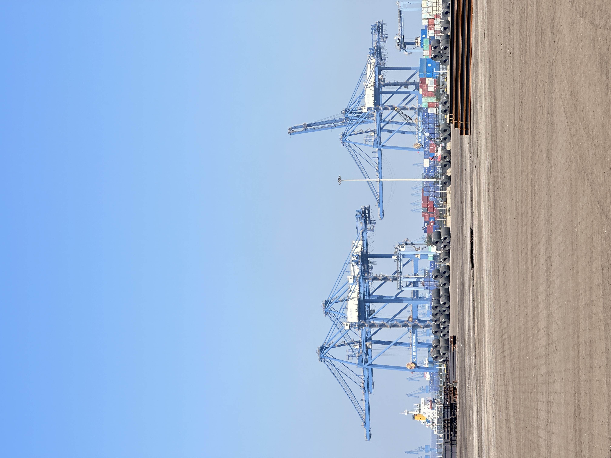

Zimbabwe’s New Clinker Capacity Push Could Reshape Southern Africa’s Cement Trade Map
A new 6000t/day clinker line agreement between Shuntai Investments and CBMI, together with PPC’s expansion cooperation with Sinoma Overseas, suggests Zimbabwe is moving more aggressively to build local clinker strength. For traders, the real question is not one project alone, but how regional import patterns and competitive pressure may evolve if this capacity lands on schedule.
津巴布韦新一轮熟料扩产，可能改写南部非洲水泥贸易版图
Shuntai Investments 与 CBMI 新签 6000 吨/日熟料线协议，同时 PPC 也在与 Sinoma Overseas 推进扩产合作，这说明津巴布韦正在更积极地补强本地熟料能力。对贸易商来说，真正值得关注的不是单一项目本身，而是如果这些产能按计划落地，区域进口格局与竞争压力会如何变化。

Two recent signals from Zimbabwe deserve attention. Industry reports say Shuntai Investments has signed an EPC agreement with CBMI Construction for a new 6000t/day clinker production line in Zvishavane. Separately, PPC has announced cooperation with Sinoma Overseas to improve efficiency and expand clinker and cement capacity in Zimbabwe. Taken together, these are not random headlines. They suggest that clinker security is becoming a strategic issue inside the country and, potentially, across nearby regional markets.

1. Why this is bigger than one new production line
A single kiln project does not rewrite a market overnight. But back-to-back capacity signals from different players usually mean the same constraint has become impossible to ignore. Recent reporting around Zimbabwe’s market has also highlighted clinker shortages and the need for imported feedstock in some situations. That makes fresh investment more meaningful. It is not only about volume growth. It is about reducing exposure to supply interruptions, improving kiln economics and giving local producers more room to defend market share.
For traders, that is an important distinction. Markets that invest to close a clinker gap often become less predictable for pure import-led business, but more interesting for long-term supply partnerships, equipment-related logistics and cross-border competition analysis.
2. What it could mean for Southern Africa trade flows
If Zimbabwe succeeds in adding stable clinker capacity, the first impact may be local: better supply discipline and less dependence on emergency supplementation. The second impact could be regional. Southern Africa’s cement and clinker trade is sensitive to transport cost, border execution, plant uptime and the balance between inland production and seaborne alternatives. New domestic clinker strength in one market can change the negotiating position of buyers and sellers well beyond that border.
That does not automatically mean imports disappear. In many markets, new capacity takes time to ramp up and consistency matters as much as nameplate size. But it does mean traders should watch for changes in buying behavior, price responsiveness and how regional producers position themselves against imported clinker or finished cement.

3. The practical takeaway for cement and clinker suppliers
From SENLAN’s market perspective, the takeaway is straightforward: capacity news should be read as a trade-structure signal, not just an industrial headline. When a market works to strengthen clinker self-sufficiency, outside suppliers need sharper positioning. That can mean better timing, clearer value on reliability, smarter freight planning and a more realistic view of where import opportunities remain durable.
In short, Zimbabwe’s latest moves are worth watching because they may influence how clinker is sourced, priced and moved across Southern Africa over the next phase of competition.
最近来自津巴布韦的两条行业信号值得关注。行业报道显示，Shuntai Investments 已与 CBMI Construction 签署 EPC 协议，计划在 Zvishavane 建设一条新的 6000 吨/日熟料生产线。与此同时，PPC 也宣布与 Sinoma Overseas 合作，提升其在津巴布韦的效率并扩充熟料和水泥产能。把这两条信息放在一起看，它们并不是零散新闻，而是在说明一个更深层的问题：熟料保障正在成为当地乃至周边市场的战略议题。
1. 为什么这不只是新增一条生产线
单个窑线项目当然不会一夜之间改写市场，但如果不同玩家连续释放扩产信号，通常说明同一个约束已经被市场反复感受到。近期关于津巴布韦市场的报道，也提到过熟料短缺以及某些情况下需要进口补充的问题。在这种背景下，新投资的意义就更强了。它不只是增加产量，更是为了降低供给中断风险、改善窑线经济性，并给本地生产商更多守住市场份额的空间。
对贸易商而言，这一点很关键。一个为了填补熟料缺口而投资的市场，往往会让单纯依赖进口的生意变得没那么线性，但同时也会让长期供货协作、设备物流配套以及跨境竞争研判变得更重要。
2. 这可能如何影响南部非洲贸易流向
如果津巴布韦能够形成稳定的新增熟料能力，第一层影响可能发生在本地：供应更有纪律性，对临时补货的依赖降低。第二层影响则可能出现在区域层面。南部非洲的水泥与熟料贸易，长期受运输成本、边境执行、工厂开工率以及内陆产能和海运替代之间平衡的影响。一国本地熟料能力增强，往往会改变边界之外买卖双方的谈判位置。
这并不意味着进口会立刻消失。许多市场的新产能爬坡都需要时间，而且稳定性和一致性往往和名义产能同样重要。但它确实意味着，贸易商需要更密切观察采购行为、价格敏感度，以及区域生产商如何重新定位自己与进口熟料或成品水泥的竞争关系。
3. 对水泥与熟料供应商的务实启示
从森蓝的市场视角看，结论很直接：产能新闻应被当作贸易结构信号来读，而不只是工业新闻。当一个市场开始强化熟料自给能力时，外部供应商就需要更精准地定位自己。这可能意味着更好的时机判断、更清晰的可靠性价值表达、更聪明的运费安排，以及对哪些进口机会仍具持续性的更现实判断。
简而言之，津巴布韦这轮最新动作值得持续关注，因为它可能影响下一阶段南部非洲熟料的采购方式、定价逻辑与流动路径。
Explore products or discuss your inquiry.
If this market signal is relevant to your sourcing plan, you can review our core product pages or contact us with laycan, quantity, target specification and loading method.
Request a quote